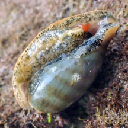

|
|
| shelled snails text index | photo index |
| Phylum Mollusca > Class Gastropoda |
| Cowries Family Cypraeidae updated Jul 2020
Where seen? Some species of cowries are still common on all our shores. Even these, however, are usually well camouflaged or well hidden under rocks, nooks and crannies or in rubble. They are usually more active at night. Precious shell: Cowries produce among the most beautiful and highly prized shells. One cowrie was even used as currency by Polynesians in the past; it is called the Money cowrie! However, a living cowrie is even more fascinating than an empty shell of a dead cowrie. Two-in-one shell: A young cowrie's first shell is a narrow spiral. As it matures, it encloses this spiral shell with a larger outer shell which has the typical cowrie shape and slit-like opening with teeth. As the animal grows, the inner spiral layers may be reabsorbed to make room for the larger animal and the material reused to build a larger outer shell. A damaged shell appears to be a shell within a shell, but it is really one continuous shell. The shells of juveniles tend to be of one colour or banded. The full colours and patterns usually only appear in the shells of adults. Marvellous mantle: When alive and moving around, the cowrie usually encloses its shell with its mantle (a part of its body). The mantle may have a different colour and pattern from the shell and is often also 'textured' with tiny projections. When the shell is covered by the mantle, a cowrie is sometimes mistaken for a slug. Here's more on how to tell apart slugs and animals that look like slugs. The fleshy mantle is a highly specialised organ. It is the main architect of the glossy shell, as it lays down a layer of pearl-like substances as well as the colour and patterns. It also repairs and enlarges the shell and protects it from algae and encrusting animals. This is why a cowrie shell is so shiny and smooth. When disturbed, the entire mantle retracts into the shell. |
 When covered with the 'hairy' mantle they are often mistaken for slugs Pulau Sekudu, Jul 04 |
 The animal with tentacles and broad foot. Labrador, Jun 05 |
 The 'toothed' shell opening is only seen when The 'toothed' shell opening is only seen when the animal is completelyretracted. Changi, Jul 02 |
 A broken shell shows the internal structure of a typical cowrie. |
 Young cowrie, has not developed 'teeth' at the shell opening yet. St John's Island, Feb 24 Photo shared by Vincent Choo on facebook. |
| What do they eat? As a group,
cowries eat a wide variety of things from algae, sponges to scavenging and carnivorous cowries that eat other snails. Each
has a radula adapted to its particular prey. Most cowries live in
the intertidal zone, hiding during the day and emerging to feed at
night. A cowrie has a pair of tentacles and a siphon, which is part
of the mantle modified for breathing and sampling the water to look
for food and mates. Cowrie babies: The mother cowrie lays her eggs in a horny capsule attached to a hard surface by a short stalk, these capsules are grouped in a cluster. Some mother cowries remain with their egg capsules until they hatch. The eggs are at first white or yellow and turn dark grey as they mature. Some large cowries can live for 10 years, while smaller one for 2-3 years. |
 Eggs
turn dark grey
as they mature. Eggs
turn dark grey
as they mature.Chek Jawa, Oct 03 |
 Mama cowrie under a rock, protecting her egg mass with her foot. Sentosa, Apr 10 |
| Human uses: Some cowries are popular
in the live aquarium trade. Cowries are among the most harvested snails
for the shell trade. In the past, they were traditionally collected
for food. Some islanders use cowries to bait traps for octopus. Status and threats: Recent estimates suggest that half the cowrie species in Singapore have been lost. The Gold-ringed cowrie (Cypraea annulus) has almost if not completely been wiped out on our shores. This small cowrie was previously found in large groups on our rocky shores and reef flats. It has a narrow yellow band around its greyish-white back. Although considered one of the most common cowries in our region, the Tiger Cowrie (Cypraea tigris) is now rarely seen. Both are listed as 'Endangered' while the Arabian cowrie (Cypraea arabica) is listed as 'Vulnerable' on the Red List of threatened animals of Singapore. Like other creatures of the intertidal zone, they are affected by human activities such as reclamation and pollution. Trampling by careless visitors and over-collection can also have an impact on local populations. |
| Some Cowries on Singapore shores |


| Family
Cypraeidae recorded for Singapore from Tan Siong Kiat and Henrietta P. M. Woo, 2010 Preliminary Checklist of The Molluscs of Singapore. in red are those listed among the threatened animals of Singapore from Davison, G.W. H. and P. K. L. Ng and Ho Hua Chew, 2008. The Singapore Red Data Book: Threatened plants and animals of Singapore. +from our observation ^from WORM
|
Links
References
|